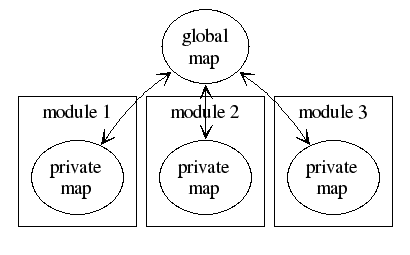

![[MAT logo]](../../images/MAT-linux-h100.gif)
The global map is the area where MatPLC points are kept.
It contains all of the application data, including physical I/O, internal coils, and any other data to be shared between modules. Private data may still be maintained inside the module, but be aware that if it is not in the global memory map, it is not going to be available to any other logic engines, HMI modules, debugging tools, etc.
Each module, upon being started, by default is given a private copy of the global memory map. All functions performed by a module are done to this private memory map which is then synchronized back to the global memory map through a function call in the shared memory library. This synchronization is semaphore controlled, which provides atomic updates. When run with a single logic engine, this allows the MatPLC to mimic the behaviour of a traditional PLC.
The shared memory is allocated when the MatPLC is started
(matplc -g), and deallocated when the PLC is shut down
(matplc -s). Even in the rare cases that MatPLC becomes
inconsistent (e.g. while hacking the MatPLC kernel itself) the shutdown
command usually manages to remove all the shared resources correctly.
If for some reason some resources may reamin, these may be deallocated
manually using ipcrm(8).
The MatPLC gmm library is the only way to access the shared memory. At initialization, it allocates a private map and also a map mask. The mask is used to determine whether a module has write access to a particular data point. If a module tries to modify a data point to which it does not have write access, these changes will simply be ignored.
The library provides various functions for access to the global map, and
some subsidiary functions, types and variables. Note the distinctions between
private and global memory.
| plc_pt_t | This is the "point handle" data type.
The only field of Languages which have exceptions typically do not have a
Point handles are usually obtained using the functions
| |
|---|---|---|
plc_pt_t data_point; |
||
| plc_get() |
Provides read access to the private memory map. Note that this may not be
an accurate representation of the data in the global memory map, as it is
stored as a snapshot of data since the last call to
plc_update(). If it is critical that the most accurate data be
used, call plc_update() or plc_update_pt(s)() prior
to plc_get().
There is no restriction to what data may be read in the private memory map.
| |
i=plc_get(data_point);Data_point is of type plc_pt_t, and is checked to ensure it is a valid private memory map location. Please see the description of plc_pt_t above.
The returned value is an unsigned integer of up to (currently) 32 bits, as read from the private map at the location addressed by data_point. | real-time; immediate | |
| plc_set() | Provides write access to the private memory map. Note that when
plc_set() is called, any changes to data not marked for
write access in the shared memory manager's configuration will be
discarded. Changes made to the private memory map will not
be reflected in the global memory map until plc_update is called. If it is
critical to get data changes to the global memory map, call
plc_update() immediately after plc_set().
| |
plc_set(data_point, value); data_point is of type plc_pt_t, and is checked to
ensure it is a valid private memory map location. Please see the
description of plc_pt_t above.
| real-time; immediate | |
| plc_get_f32() plc_set_f32() |
These have the same functionality as the
plc_get() and plc_set() functions, except that
the type of the value is a 32-bit float (f32). The value is
simply stored as-is. It is up to the application to ensure that the point
in question is also considered as a float by all other modules that access
it.
The only value that is guaranteed to make sense when mixing types is that an integer zero will convert to a floating point zero. All others will result in nonsense values. | |
value=plc_get(data_point); plc_set(data_point, value); data_point is of type plc_pt_t, and is checked to
ensure it is a valid private memory map location. Please see the
description of plc_pt_t above.
The returned or accepted | real-time; immediate | |
| plc_update() | Causes the memory manager to re-synch the global memory map with
the private memory map. Points to which the module calling plc_update() has right access are copied from the private to the global map. Read-only points will copied from the global map to the private map. The updates are semaphore controlled. This provides for atomic
updates of the global memory map between all modules.
Some of the scripting languages, for instance Tcl, do not explicitly have this function;
instead, they call Note: Partial updates of the global memory map are supported, but not
documented here yet; see the | |
plc_update(); |
real-time; may sleep on semaphore | |
| plc_pt_by_name() | Provides point handles of type plc_pt_t for use
with the plc_get() and plc_set() functions. This
function does not operate in real-time, as it must access the configuration
file. All point handles should be established before time critical portions
of the module start running.
In the object-oriented languages, this function is usually the constructor of the point class. The only field of the Languages which have exceptions throw an exception when there is a
problem; thus, there is no | |
data_point = plc_pt_by_name(data_point_name);
if (data_point.valid == 0) {
printf("Error! Can't access %s \n",
data_point_name);
}
| non-real-time | |
| plc_subpt() | Creates sub-point handles of type plc_pt_t, which refer to a part of a `parent' point. Sub-point handles can be used the same as normal point handles. | |
For example, given a 16-bit point, one can split it into two 8-bit points and
access these separately.
/* get left half */
data_a_point = plc_subpt(data_point,0,8);
/* get right half */
data_b_point = plc_subpt(data_point,8,8);
if ((data_a_point.valid == 0) ||
(data_b_point.valid == 0)) {
printf("%s:%d: Internal error!\n",
__FILE__,__LINE__);
} | non-real-time | |
| plc_pt_null() |
Creates a null point handle of type plc_pt_t. Null handles can be used the same
as normal point handles. Anything written to them is discarded, on reading they
return zero.
In object-oriented languages which allow polymorphic constructors, for instance python, this function is usually a constructor of the point class with no arguments. | |
if (report_status) {
status_point = plc_pt_by_name(status_point_name);
if (status_point.valid == 0) {
printf("Error! Can't access %s \n",
status_point_name);
status_point = plc_pt_null();
}
} else {
status_point = plc_pt_null();
}
The rest of the program can then ignore the report_status flag
and simply set and reset the status_point as appropriate.
| non-real-time | |
lib/gmm/gmm.h for more details


$Date: 2006/03/06 03:38:50 $